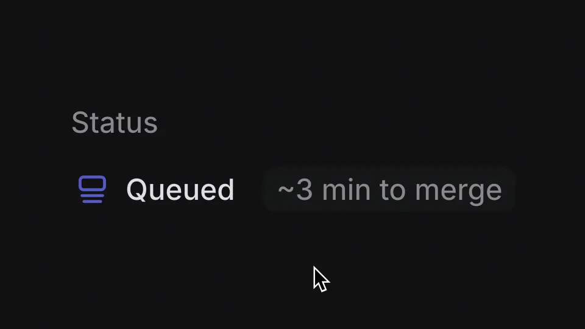

Linear / V114
Linear — merge queue status in diffs
一条稳定的排队状态，用悬停补充更详细的等待信息。整个动作只需要局部出现与消失。
构图与编排 可播放 · 可替换内容
整体编排规则示例
查看 HTML 源码
<!doctype html><html lang="zh-CN"><meta charset="utf-8"><meta name="viewport" content="width=device-width,initial-scale=1"><title>Linear — merge queue status in diffs · sequence</title><style>html,body{margin:0;width:100%;height:100%;overflow:hidden;background:#090a0c}canvas{display:block;width:100%;height:100%;object-fit:contain}</style><body data-mode="sequence"><canvas width="1000" height="600"></canvas><script src="data.js"></script><script src="common.js"></script><script src="scene.js"></script><script src="bridge.js"></script></body></html>画面元素状态行预计时长指针说明浮层
MOTION LANGUAGE
动作与构图
局部动作 · 构图规则
01
悬停补充信息，不改变状态
悬停补充信息，不改变状态规则示例
查看 HTML 源码
<!doctype html><html lang="zh-CN"><meta charset="utf-8"><meta name="viewport" content="width=device-width,initial-scale=1"><title>Linear — merge queue status in diffs · sequence</title><style>html,body{margin:0;width:100%;height:100%;overflow:hidden;background:#090a0c}canvas{display:block;width:100%;height:100%;object-fit:contain}</style><body data-mode="clip" data-start="1.3" data-end="4.7"><canvas width="1000" height="600"></canvas><script src="data.js"></script><script src="common.js"></script><script src="scene.js"></script><script src="bridge.js"></script></body></html>指针移到预计时长附近后出现说明浮层，离开后收起。Queued 和预计时长一直留在原位；浮层贴近触发区域，不能挡住正在解释的文字。
02
预计时长与已等待时长分层
主行显示当前状态和预计耗时，浮层显示已经等待多久，两者使用不同表述。深色背景、浅色无衬线、冷紫状态点与稍亮浮层即可建立层次；只对浮层使用短促淡入淡出，避免整行抖动。
03
可用于下载、渲染或发布队列
替换状态名、预计时间与详细说明时，保留这两层信息的区别。若没有额外信息，直接移除浮层；不需要为一个 hover 补充标题片或全片分镜。
SEQUENCE
段落与节奏
点击段落，定位到上方编排示意。

画面参考 · 离散静帧
KEEP THE RELATIONSHIPS
制作其他主题
- 可迁移下载、渲染或发布队列；保留状态与说明分层。
制作约束
状态行 / 预计时长 / 指针 / 说明浮层
- 短片只有局部 hover：主状态保持，悬停补充已经等待的时长，离开后隐藏。
- 预计完成与已等待时长是不同信息，不能互换。